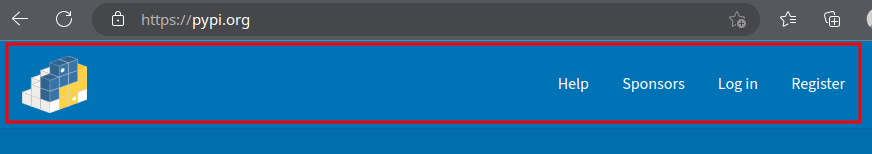
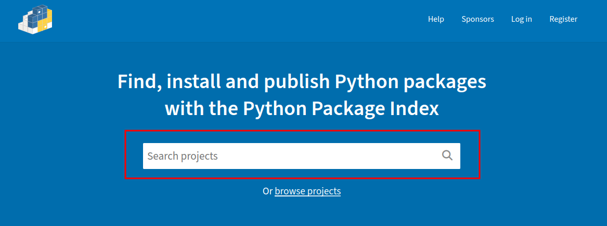
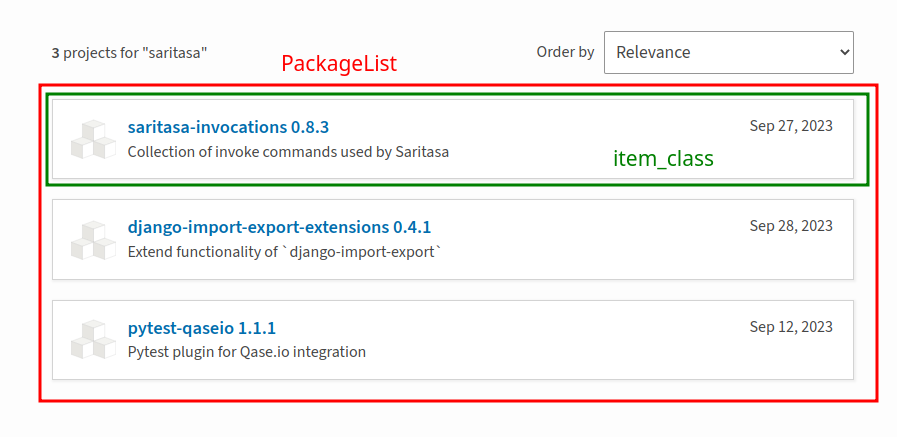
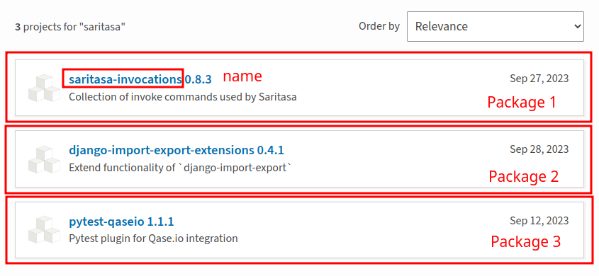
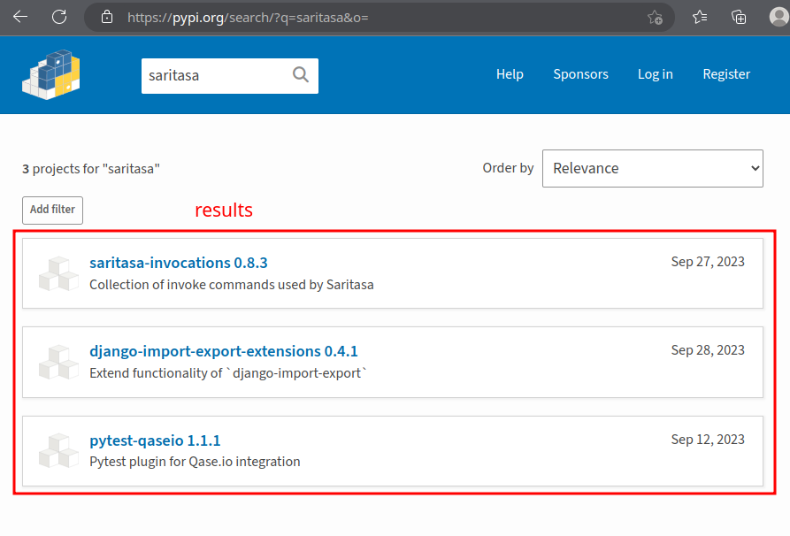
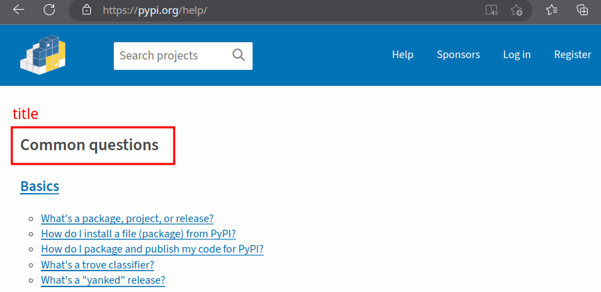
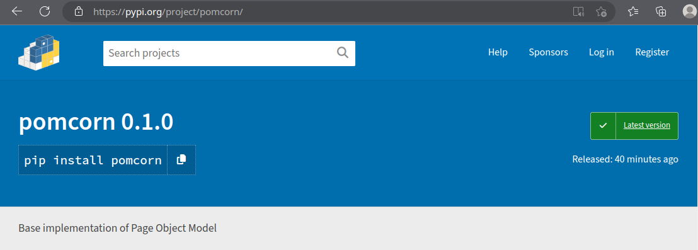

Demo Autotests Project¶
This is a demo autotest project implemented with pomcorn package for PyPI web site.
To start tests in this project you need to prepare a python virtual environment and install
according driver for Chrome browser.
You can get a demo project from package repository.
Setup¶
Environment¶
The simplest way to configure a proper Python version and virtual environment is using uv.
Install dependencies and activate your virtualenv
uv sync --only-group demo
source .venv/bin/activate
Running Autotests¶
To run tests, use invoke command pytest:
inv pytest.run
About the project¶
This project is a mini autotesting system for the PyPI website. It implements the basic structure of pages and tests according to Page Object Model pattern.
The project structure looks like this
(__init__.py files were skipped to simplify the structure):
│ demo/
├── pages/
│ ├── base/
│ │ ├── base_components.py
│ │ └── base_page.py
│ ├── common/
│ │ ├── navigation_bar.py
│ │ └── search.py
│ ├── search_page/
│ │ ├── components/
│ │ │ ├── package_list.py
│ │ │ └── package.py
│ │ └── search_page.py
│ ├── help_page.py
│ ├── index_page.py
│ └── package_details_page.py
├── tests
│ ├── test_logo.py
│ └── test_search.py
└── conftest.py
Pages¶
This folder contains the page and component classes required to represent PyPI web pages. These classes contain web page interaction logic to make tests free of that implementation.
Base Folder¶
Basic classes for PyPI pages and components are implemented here.
Base Components¶
Base Page¶
Note
The check_page_is_loaded method and the APP_ROOT attribute require special attention
here.
PyPIPage
¶
Bases: Page
Base representation of the page for PyPI.
This is the base page for all following pages, so here we have to implement only properties and methods common to all pages of application.
Source code in demo/pages/base/base_page.py
15 16 17 18 19 20 21 22 23 24 25 26 27 28 29 30 31 32 33 34 35 36 37 38 39 40 41 42 43 44 45 46 47 48 49 50 51 52 53 54 55 56 57 58 59 60 61 62 63 64 65 66 67 68 69 70 71 72 73 74 75 76 77 78 79 80 81 82 83 84 85 86 87 88 89 90 91 92 93 94 95 96 | |
navbar
property
¶
Get a component for working with the page navigation panel.
check_page_is_loaded()
¶
Return the result of checking that the page is loaded.
Check that main tag is displayed.
Source code in demo/pages/base/base_page.py
67 68 69 70 71 72 73 74 75 76 77 78 79 80 81 82 | |
click_on_logo()
¶
Click on the logo and redirect to IndexPage.
Source code in demo/pages/base/base_page.py
91 92 93 94 95 96 | |
Common¶
This folder contains components common to multiple pages.
Navigation Bar¶
This class represents navigation bar on the top side of all PyPI pages.

Navbar
¶
Bases: PyPIComponent
Component representing navigation bar in the top of web application.
Source code in demo/pages/common/navigation_bar.py
16 17 18 19 20 21 22 23 24 25 26 27 28 29 30 31 32 33 34 35 | |
open_help()
¶
Click on Help button and redirect to HelpPage.
Source code in demo/pages/common/navigation_bar.py
30 31 32 33 34 35 | |
Search component¶
This class represents a search field that can be placed on multiple pages.
| Search field examples |
|---|
| Index page |
 |
| Navbar |
Search
¶
Bases: PyPIComponent
Component representing the search input field.
Source code in demo/pages/common/search.py
14 15 16 17 18 19 20 21 22 23 24 25 26 27 28 29 30 31 | |
find(text)
¶
Paste the text into the search field and send Enter key.
Redirect to SearchPage and return its instance.
Source code in demo/pages/common/search.py
21 22 23 24 25 26 27 28 29 30 31 | |
Search Page Folder¶
Search Page Components¶
Because a number of additional components needed to be created to implement the search page, a separate folder was created for this page. This is where the page itself and its dependent components are stored.
Package List¶
This class represents a list of found packages on the PyPI search page.

PackageList
¶
Bases: ListComponent[Package, PyPIPage]
Represent the list of search results on SearchPage.
Source code in demo/pages/search_page/components/package_list.py
7 8 9 10 11 12 13 14 15 16 17 18 19 20 21 22 23 24 25 26 | |
Package¶
This class represents one found package listed on the PyPI search page.

Package
¶
Bases: PyPIComponent
Represent the single search result (package) on SearchPage.
Source code in demo/pages/search_page/components/package.py
12 13 14 15 16 17 18 19 20 21 22 23 24 25 26 27 28 29 30 | |
name
property
¶
Get the package name.
open()
¶
Click on the package and open its details page.
Source code in demo/pages/search_page/components/package.py
22 23 24 25 26 27 28 29 30 | |
Search Page¶
This class represents the PyPI search page.

SearchPage
¶
Bases: PyPIPage
Representation of the page with search results.
Source code in demo/pages/search_page/search_page.py
10 11 12 13 14 15 16 17 18 19 20 21 22 23 24 25 26 27 28 | |
results
property
¶
Get the component for work with the found packages.
open(webdriver, *, app_root=None)
classmethod
¶
Open the search page.
Source code in demo/pages/search_page/search_page.py
13 14 15 16 17 18 19 20 21 22 23 | |
Help Page¶
This class represents the PyPI help page. The title property is
implemented here to show how you can use page properties to implement the check_page_is_loaded
method.

HelpPage
¶
Bases: PyPIPage
Represent the help page.
Source code in demo/pages/help_page.py
9 10 11 12 13 14 15 16 17 18 19 20 21 22 23 24 25 26 27 28 29 30 31 32 33 34 35 36 37 | |
check_page_is_loaded()
¶
Return the check result that the page is loaded.
Return whether help page title element are displayed or not.
Source code in demo/pages/help_page.py
31 32 33 34 35 36 37 | |
open(webdriver, *, app_root=None)
classmethod
¶
Open the help page via the index page.
Source code in demo/pages/help_page.py
15 16 17 18 19 20 21 22 23 24 25 26 27 28 29 | |
Index Page¶
This class represents the PyPI start page. This page shows the use of the class Search component.
IndexPage
¶
Bases: PyPIPage
Represent the index page.
Source code in demo/pages/index_page.py
7 8 9 10 11 12 13 14 15 16 17 18 19 20 21 22 23 24 25 26 27 28 29 30 31 32 | |
search
property
¶
Get the search component.
Allows to work with the search field at the center of the page.
Package Details Page¶
This class represents the PyPI package details page.

PackageDetailsPage
¶
Bases: PyPIPage
Represent the package details page.
Source code in demo/pages/package_details_page.py
9 10 11 12 13 14 15 16 17 18 19 20 21 22 23 24 25 26 27 28 29 30 31 32 33 34 | |
header
property
¶
Get the header text.
open(webdriver, package_name, *, app_root=None)
classmethod
¶
Search and open the package details page by its name.
Source code in demo/pages/package_details_page.py
19 20 21 22 23 24 25 26 27 28 29 30 31 32 33 34 | |
Note
You don't have to implement the check_page_is_loaded page method if this property is set on
the base page and is appropriate for the current page.
Tests¶
This folder contains autotests that use pages prepared in fixtures to reproduce some scenarios of user interaction with the site.
Test Logo¶
test_logo(help_page)
¶
Check that click on site logo redirect to index page.
Source code in demo/tests/test_logo.py
4 5 6 7 8 9 10 | |
Conftest¶
Here are the implemented base fixtures for implemented PyPI pages. This is useful practice to avoid duplicating page opening calls in each test. Also, the webdriver fixture with a given window size (1920×1080) is implemented here.
help_page(webdriver)
¶
Open help page of PyPI and return instance of it.
Source code in demo/conftest.py
30 31 32 33 | |
index_page(webdriver)
¶
Open index page of PyPI and return instance of it.
Source code in demo/conftest.py
24 25 26 27 | |
results_page(webdriver)
¶
Open search results page of PyPI and return instance of it.
Source code in demo/conftest.py
36 37 38 39 | |
webdriver()
¶
Initialize Chrome webdriver.
Source code in demo/conftest.py
10 11 12 13 14 15 16 17 18 19 20 21 | |